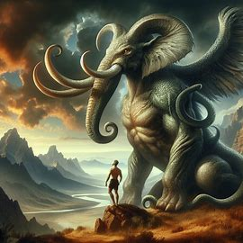

According to legend, the Grootslang is a primordial creature and as old as the world itself. The tales say that the gods (who were novices at creating things) made a terrible mistake when they created the Grootslang because they gave it enormous strength, cunning, and intellect. Realizing their mistake, the gods split the Grootslang into separate creatures and thus the first elephants and the first snakes were created. But one of the original Grootslangs escaped, and from this first Grootslang all the others were born. It is said to devour elephants by luring them to its cave, which is known as the "Wonderful Hole" or the "Bottomless Pit." Said cave supposedly connects to the sea, which is about 40 miles away. According to local legend, the cave is full of diamonds. It is also said to live in warm lakes and rivers.
Seiryū is the Japanese name given to a blue-green dragon, in Japanese mythology, which is part of the four divine monsters. It is representative of one of the cardinal points, the east. It also symbolizes the element of water and represents spring. In Japanese mythology, he is one of the protectors of the city of Kyoto.
The Loch Ness Monster, commonly called Nessie,1 is the name of a legendary animal said to live in Loch Ness,
a deep freshwater lake near the city of Inverness, in Scotland. Along with Bigfoot and Yeti, Nessie is perhaps
the most popular and widespread mystery in cryptozoology.
Most scientists and other experts claim that the existence of a creature like the one described by witnesses is highly unlikely.
The term Chupacabra refers to a legendary cryptid,
which is described as a being that attacks animals of different species in livestock or rural areas by sucking their blood.
This myth lasted for about 30 years.
The myth had its origin in Puerto Rico in 1995, and since then various alleged sightings have been reported in places
so far from the island in America, and even coming from countries outside the American continent, such as Spain, the Philippines and Russia
Bigfoot, also known as Sasquatch, is a primate-like cryptid belonging to
to the hominid family, which is supposedly usually seen in forests at high altitudes, mainly in the
Pacific Northwest region of North America.
Be that as it may, legend says that this animal makes noises similar to those of a bear or perhaps a gorilla,
and although some 'sightings' have been able to locate him in daylight, generally witnesses
They agree that they saw him at night. They also talk about the reddish glow of their gaze, similar to that of their eyes.
of some nocturnal animals.
In the Norse sagas and chronicles of the Middle Ages, a terrifying sea monster the size of an island is mentioned,
that moved through the seas between Norway and Iceland. The Icelandic saga of Örvar-Oddr, from the 13th century, spoke of the "monster
largest in the sea", which swallowed "men and ships, and even whales." These intriguing news are taken up in texts
later, such as the chronicle of the Swede Olaus Magnus, from the 16th century, which described colossal creatures capable of sinking a ship.
Everything would be lost if it were not for the hero Perseus who, on the back of his winged steed, Pegasus, had to face and defeat the
Kraken showing him the freshly decapitated head of the gorgon, Medusa, turning the monster into stone and saving him from total
annihilation of the whole world.
Bunyip. This amphibian beast is described in many different ways, although everyone agrees that it would live in swamps, rivers or lakes in the most remote areas of the state of Victoria. The Bunyip, according to Aboriginal people, is an animal that causes diseases in those who threaten it. In fact, the name Bunyip itself evokes that ability to transmit evil.